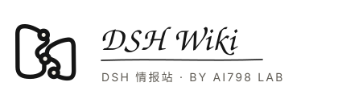

把散落的插件，连成一条能走的路。
两张资料页是一座正在展开的 Wiki；中间的一笔连续墨线，是 Harness；三个空心节点代表可插接、可替换、可继续生长的插件生态。

16 px
24 px
 64 px128 px
64 px128 px主品牌固定写作“DSH Wiki”；“DSH 情报站”只作中文副标题；“by ai798 Lab”是出品署名。标志不使用 DeepSeek 鲸鱼、DeepSeek 蓝、AI 星芒、机器人或电路脑，避免被误认为官方站。